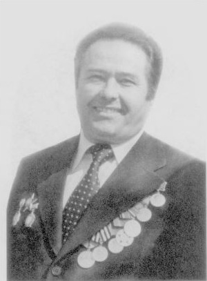
Романовский
Михаил Фёдорович
Михаил Фёдорович
Дата рождения:
В наградном листе о награждении орденом Красной Звезды красноармейца Михаила Романовского говорится, что на территории Венгрии в боях в районе населённого пункта Южного Балажка 8 марта 1945 года рядовой Михаил Романовский под сильным пулеметно-миномётным огнём фашистов в составе своего пулемётного расчёта меткой стрельбой уничтожил около 30 гитлеровцев, чем способствовал отражению четырёх атак противника, поддерживаемых артиллерийским огнём самоходок. Родился Михаил в деревне Погост бывшего Туровского района бывшей Полесской области, ныне Житковичского района Гомельской области. Деревня расположена в уютном живописном месте, у впадения Ствиги в Припять. Чудесный полесский край! Сказочная красота этих мест западала в душу. А как известно, что на заре входит в душу, что почувствуешь и познаешь — это твой духовный золотой запас. Миша рос в большой крестьянской семье. У его родителей Фёдора Григорьевича и Марты Лаврентьевны было шестеро детей: он, младший брат Иван и четыре сестры. В 1941 году Миша успешно закончил 9-й класс Озеранской средней школы. Это было большое событие, потому что образование в то время получал не каждый. Мирный путь Михаила прервался неожиданно — началась война. Сорок первый… День 22 августа 1941 года, стал черным днём для жителей деревни Погост Туровского района Полесской области, ныне Житковичского района Гомельской области. Сначала фашисты открыли огонь из пулемётов бронекатеров, приплывших по Припяти. Затем, высадившись, подожгли деревню со всех сторон и стали беспощадно убивать всех, кто попадался на пути, — женщин, детей, стариков. В их числе оказалась и Марта Лаврентьевна Романовская. Она выбежала с узелком с едой для детей из уже пылающей хаты и рухнула во дворе, попав под огонь карателей. Тех, кто не успел спрятаться, сгоняли к бревенчатому зданию бывшего колхозного детского сада и расстреливали. Убитых стянули в детский сад, обложили соломой и подожгли. Деревня, известная с XVI века, сгорела вся. Из почти двухсот домов уцелели только одиночные хозяйственные постройки да несколько хат на окраине. Удалось спаслись от неминуемой смерти и Михаилу Романовскому с четырьмя сёстрами и младшим братом, которые успели убежать из деревни и спрятаться. Вернулись на пепелище. Ужас, боль и гнев, стремление мстить нелюдям переполняли их сердца. На плечи 17-летнего Михаила легла вся забота о самых близких. Прежде всего надо было где-то приютиться. С помощью соседей, сочувствующих шестерым сиротам, построили землянку, в которой поселились в октябре. У них, как и у оставшихся жителей деревни, начался новый период жизни, а точнее, выживания. Дети — трудяги, обделённые радостями нормального детства. Пережившие войну, они до конца своей жизни остались подранками. В конце 1942 года Михаил с группой односельчан ушёл в партизанский отряд. С 1943 года сражался в Лельчицком, затем — в отдельном Туровском отряде «За Родину», командиром которого был Василий Прасолов, комиссаром — односельчанин из Погоста Пантелей Тарасюк. Как рассказывал брату Михаил Фёдорович, самыми трудными были ожидание боя, голод и мороз. Не хватало одежды, продовольствия, оружия и боеприпасов. Боевой опыт народные мстители приобретали ценой тяжёлых потерь. 1 января 1944 года отряд «За Родину» в составе 194 партизан соединился с частями наступающей Красной Армии. Сначала Михаила направили в учебный батальон, после чего он сражался в войсках 3-го Украинского фронта. Участвовал в ожесточенных боях за Будапешт и в районе озера Балатон. О том, как сражался, говорят его боевые награды: орден Красной Звезды, орден Отечественной войны II степени, медаль «За отвагу», медаль «За взятие Будапешта» и другие. В журнале боевых действий 1292-го стрелкового полка ещё один мартовский день описывается так. В Венгрии несколько дней в конце марта не могли преодолеть заранее подготовленный рубеж противника, который сильным артиллерийско-миномётным огнём препятствовал продвижению советских войск. 31 марта в течение ночи под обстрелом противника полк своими силами навёл переправу через водную преграду и переправил два батальона, которые с боем захватили плацдарм на западном берегу, преодолев проволочные заграждения и минные поля. В 17.30 после артиллерийской подготовки и при поддержке танкового взвода полк занял деревню Пат. За то, что наводчик станкового пулемёта 2-й пулемётной роты рядовой Михаил Романовский в бою за овладение населённым пунктом Пат первым ворвался в него, открыл ураганный огонь из своего пулемёта и уничтожил 13 гитлеровцев, командир 1292-го стрелкового ордена Кутузова III степени полка майор Шурмин от имени Президиума Верховного Совета СССР наградил его медалью «За отвагу». Но это было потом. А после взятия деревни Пат противник трижды контратаковал боевые порядки полка, но успеха не имел. Отбив контратаки, полк перешёл в наступление и в 21.00 занял селение Михалд, откуда в 22.00 повёл наступление в направлении деревни Сент-Яко графства Зала, которой овладел в 4.00 первого апреля, и в 7.00 занял населённый пункт Голобок. За сутки противник потерял более 200 солдат и офицеров. При этом захвачено два исправных 155-мм орудия, более 1.000 снарядов, шестнадцать 81-мм миномётов, более 30 пулемётов и более 100 винтовок. Какой кровью достались эти одни сутки беспрерывных боев советским солдатам, в журнале боевых действий не упоминается. А сколько таких суток было на пути к Великой Победе. 9 мая полк, преследуя отступающего противника, встретил возле местечка Рагниц, что в австрийском округе Лайбниц. Несколько дней отдыхали, а потом пешком, в основном ночами, счастливые красноармейцы медленно пошли на восток. Почти за два месяца похода личный состав полка несколько раз получал благодарности вышестоящего командования за соблюдение дисциплины на марше. В югославском крае Воеводина полк расформировали. Красноармейцев старших возрастов демобилизовали, а Михаил Романовский до марта 1947 года ещё служил в составе Южной группы советских войск в Румынии рядовым 78- го гвардейского механизированного полка. После демобилизации уже взрослый мужчина, прошедший суровые испытания войной, задумался над тем, кем стать в жизни. Михаил позднее вспоминал, что долгих колебаний в выборе профессии, которой потом посвятил всю жизнь, у него не было. На его коротком жизненном пути до демобилизации самыми уважаемыми людьми были учителя. Сдал экстерном экзамены за 10-й класс. Работал пионервожатым, а после окончания Мозырского учительского института — учителем, с 1954 года — директором средней школы в Турове. Одновременно продолжал обучение на заочном отделении Гомельского педагогического института. В 1958 году его с семьёй направили в Столинский район Брестской области директором Рубельской средней школы. С 1961 года Михаил Романовский возглавил коллектив Столинской средней школы № 1 (ныне гимназии), руководителем которого был на протяжении 26 лет. Нелёгкие директорские годы. Можно без преувеличения утверждать, что это была подвижническая, самоотверженная деятельность. Михаил Фёдорович особое внимание уделял формированию хорошо организованного, сплочённого коллектива единомышленников, умных, талантливых людей, способных не только сеять знания, идеи и мысли, но и оставить в душе каждого из учеников чувство «родного дома». Говорил, что учитель — это не только специалист, который транслирует знания, это высокая миссия сотворения личности. И совсем не случайно, что в 2006 году в числе педагогов школы работали 15 воспитанников Михаила Романовского. Много профессиональных знаний, времени и энергии Михаил Фёдорович отдавал общественной работе. Неоднократно избирался депутатом Столинского городского и районного советов депутатов, на протяжении многих лет был председателем городского совета ветеранов. Особенно негодовал Михаил Фёдорович, когда видел на рынке спекулянтов, цинично торгующих боевыми наградами тех, кто заслужил их на кровавых фронтовых дорогах. В беседах с ребятами подчёркивал: любой человек должен ясно осознавать, что есть вещи, которые делать нельзя. Никогда, ни при каких обстоятельствах. Михаил Романовский заботился о том, чтобы школьники становились достойными памяти, павших в борьбе с врагом. Этому способствовали традиционные встречи с ветеранами войны, военно-спортивные игры среди старшеклассников, походы по местам боевой славы и т. п. Надолго запомнилась всем горожанам и ученикам торжественная встреча в 1964 году, организованная Михаилом Фёдоровичем с воинами-освободителями Столина, приехавшими из разных концов Советского Союза. Добиваться успехов в работе, общественной деятельности, преодолевать трудности на жизненном пути ему неизменно помогала жена и надёжный друг Людмила Ивановна, преподаватель русского языка и литературы. Земной путь Михаила Фёдоровича закончился 23 сентября 2006 года. Но продолжается дело, которому он беззаветно служил, живёт среди столинцев светлая память о воине и учителе с беспокойной, открытой людям душой.

 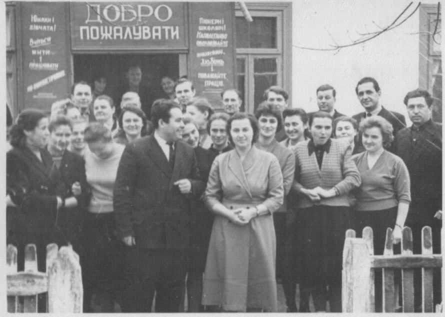
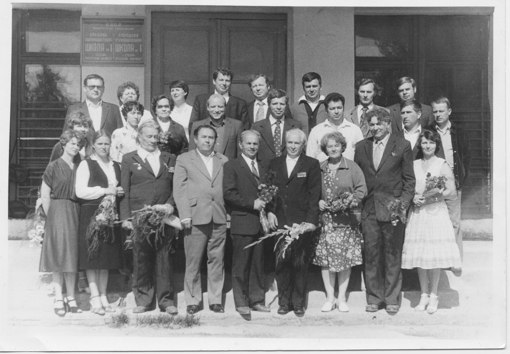
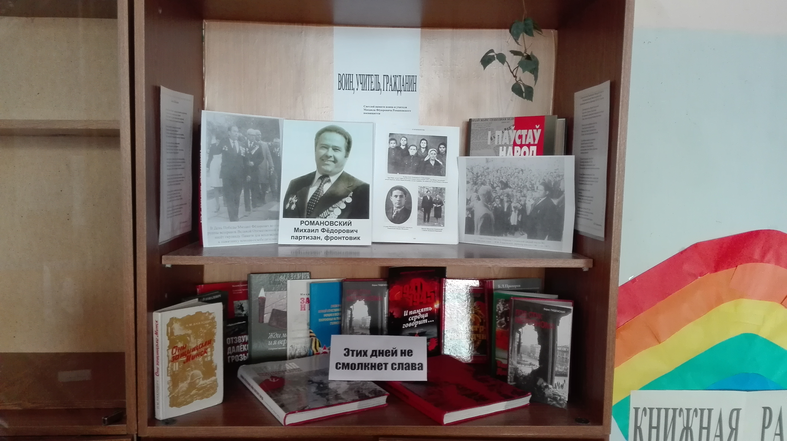
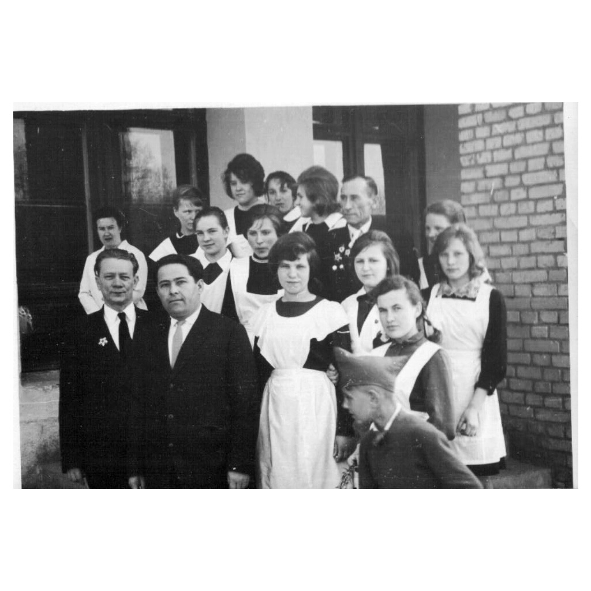
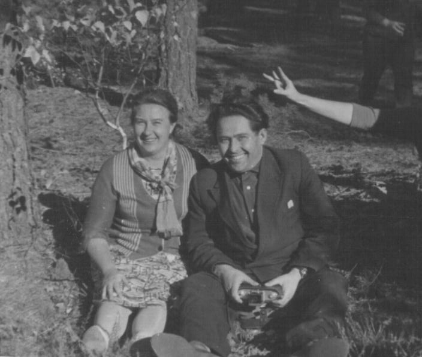
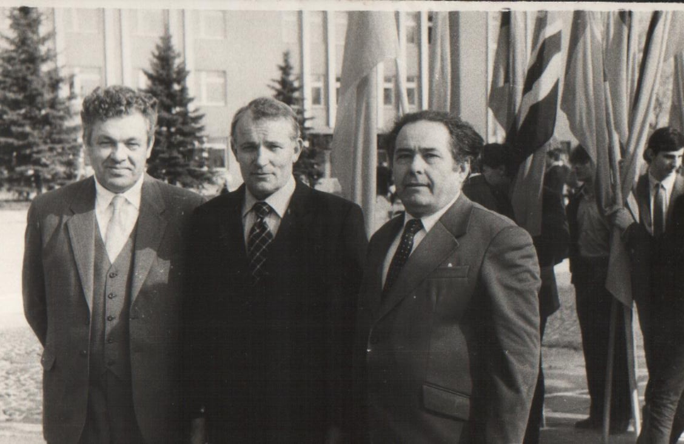
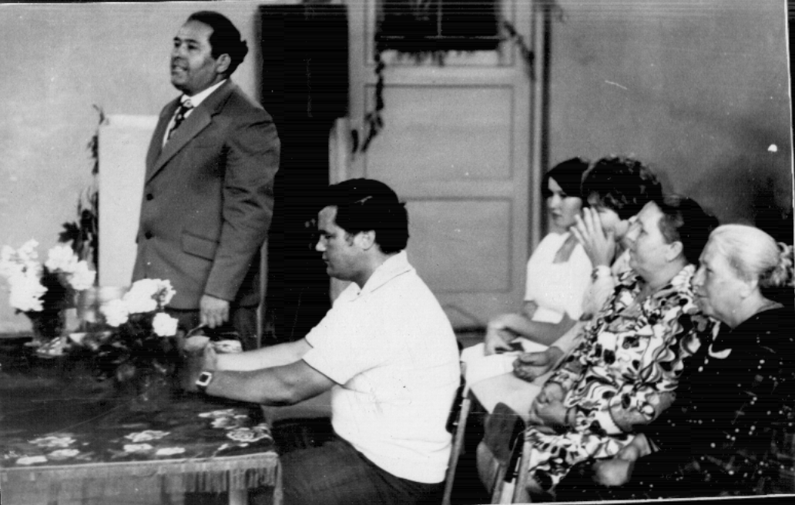
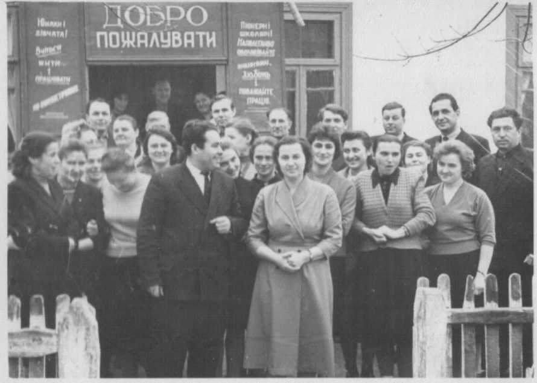
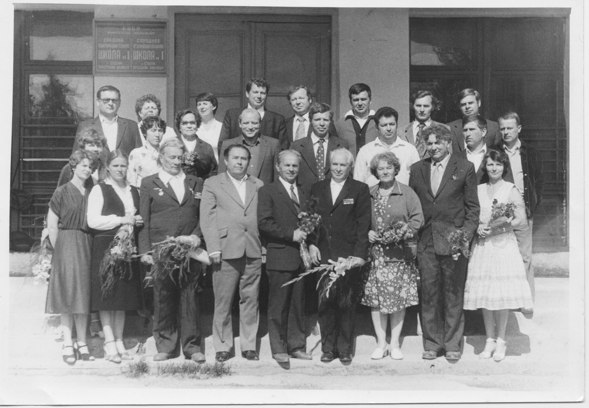
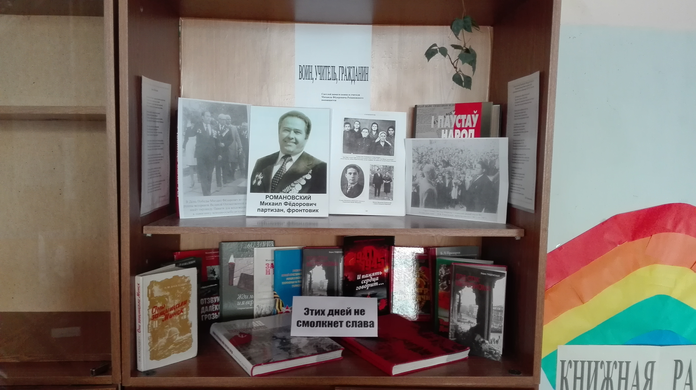
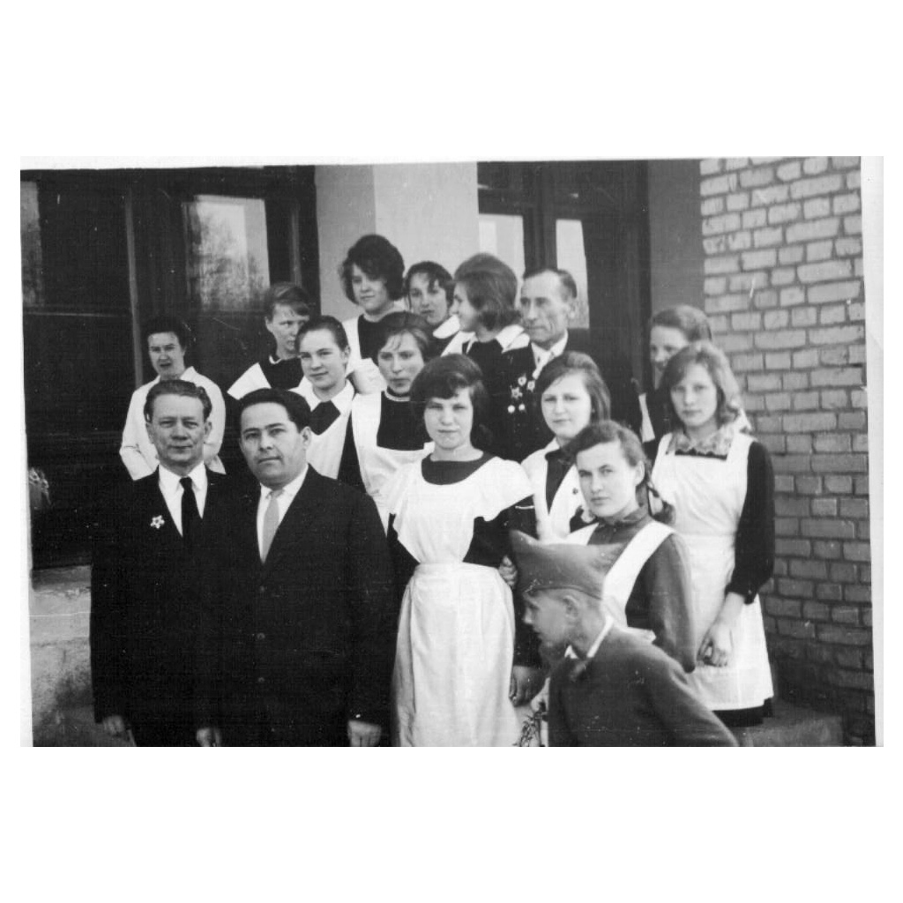
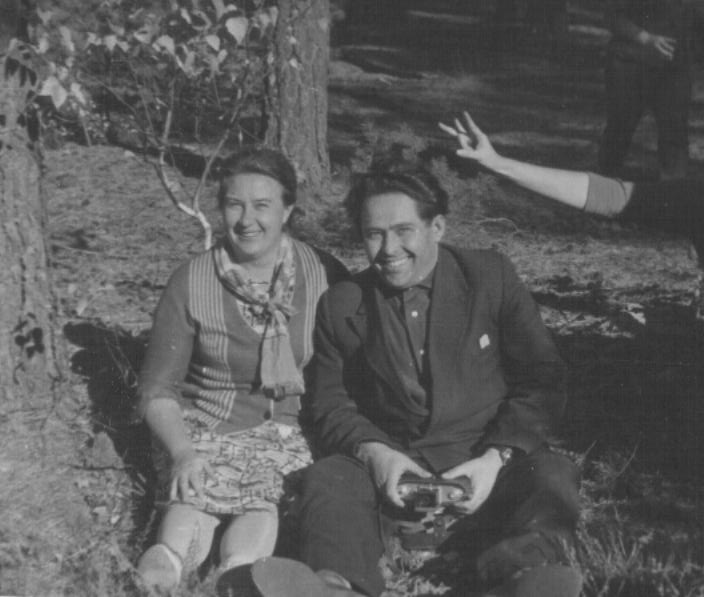
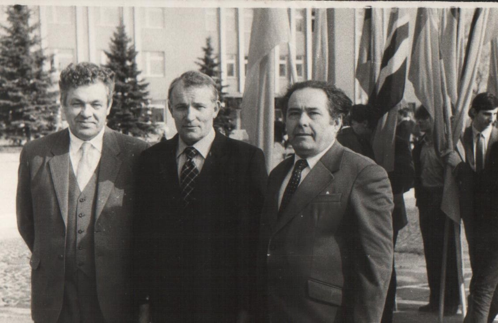
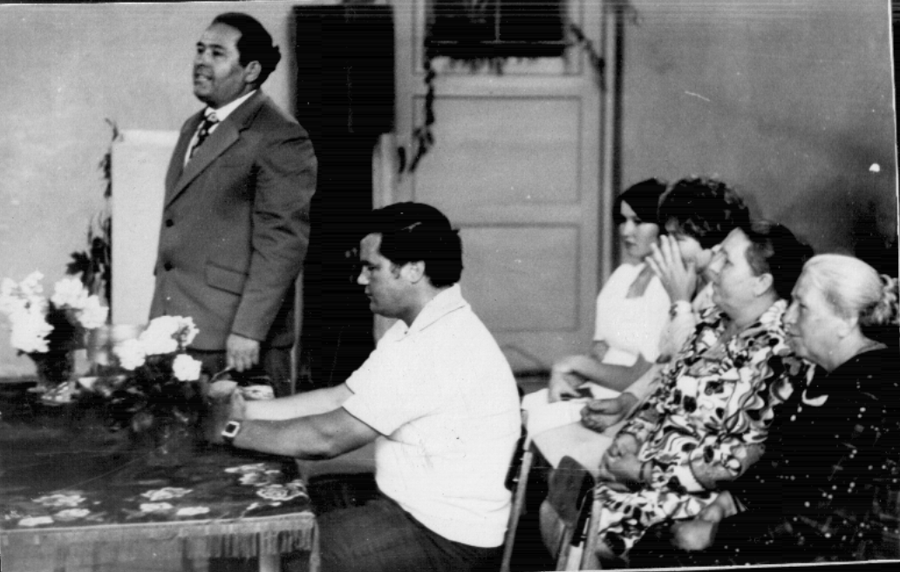